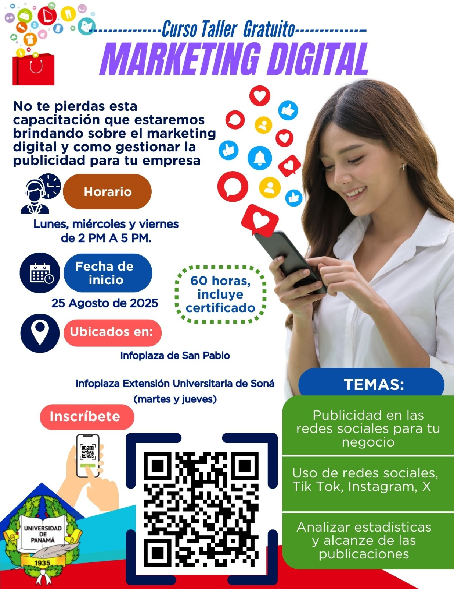
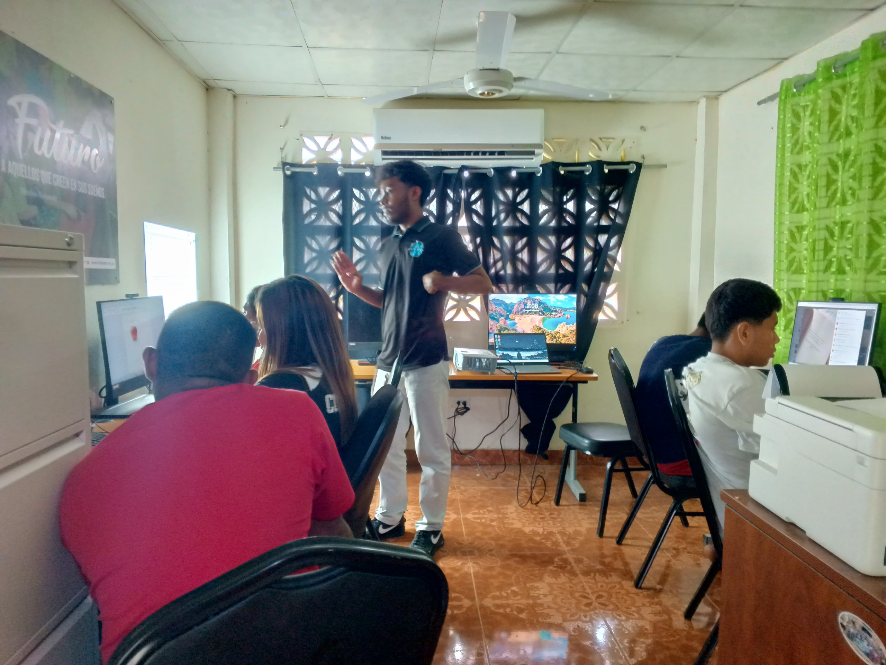

← Volver al inicio
Servicio Social 2025
Marketing Digital para Emprendedores
Impulsando el crecimiento comercial de los emprendedores locales a través de herramientas digitales.

Descripción del Proyecto
Proyecto dirigido a emprendedores locales interesados en mejorar la presencia y promoción de sus negocios mediante herramientas digitales, parte del programa de 130 horas de Servicio Social de la Universidad de Panamá.
Temas Principales
- Publicidad en las redes sociales para tu negocio.
- Uso de redes sociales, Tik Tok, Instagram, X.
- Analizar estadísticas y alcance de las publicaciones.
- Asesoramiento personalizado y promoción efectiva de productos y servicios.
Objetivo del Programa
Ayudar a emprendedores locales a promocionar sus negocios mediante herramientas digitales, facilitando su inserción en el entorno tecnológico y económico actual.
Galería de Imágenes (Haz clic para ampliar)

